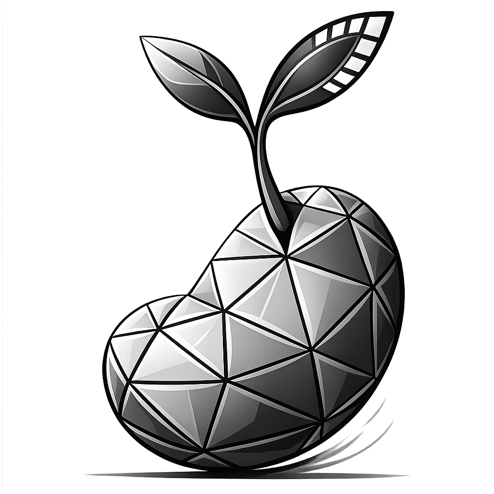

The Lantern Tide
Screenplay by Ayano Mori
A reclusive lighthouse keeper on the Sea of Japan inherits a granddaughter she never knew, and through three winters they learn each other's grief.

lotabin EntertainmentA growing motion picture studio in Japan, gathering creative minds from different story backgrounds, industries, and skills — united by one mission: to create entertainment that only human excellence and compassion can produce.
The power of storytelling has always been the true core of every great motion picture.
lotabin is more than an advertising video production partner — it is a growing motion picture studio based in Japan. We work with talented individuals all around the world to create films that genuinely move people, that spread true compassion for life, and that, in their own way, move us toward a world without war.
We make this vision possible by gathering creative minds from different story backgrounds, industries, and skills. Each of us comes from a different starting point, but we all aim to fulfill the same mission. In this era of artificial intelligence, we meet the moment with human excellence and compassion — to create the kind of entertainment only we can produce.
A living archive of stories under our wing — from early drafts and concept boards to shooting-ready scripts. Each piece is a collaboration between writers, directors, and producers from inside and outside the studio.
Screenplay by Ayano Mori
A reclusive lighthouse keeper on the Sea of Japan inherits a granddaughter she never knew, and through three winters they learn each other's grief.
Screenplay by Devon Marsh & Reiko Tachibana
A near-future translator who works between human languages and a newly arrived non-human one begins to suspect that what is being communicated is grief, not threat.
Screenplay by Kenji Ishida
In a country where war has just ended for the third time in a century, a soldier walks home through villages that are no longer sure they want soldiers walking home.
Screenplay by Imani Wells
A young farmer-priestess on a dying world is told by a dream to gather one seed from every living thing, and walk south until the soil remembers her.
Direction by Hana Okabe
A documentary built from a decade of unanswered letters left at a payphone in Ōtsuchi, and the people on either end who never spoke but kept writing.
Screenplay by Marisol Pareja
A São Paulo nurse and a Kyoto pastry apprentice meet for one week in Nagoya and try to invent a relationship that survives time zones, languages, and the shifts neither of them control.
A live look at our development slate. Each track shows the film's current stage across the standard production pipeline. We update this page as projects move forward.
Writers, directors, producers, and crew: we read everything. Cold submissions, finished drafts, half-finished outlines. If it belongs here, you'll hear back.